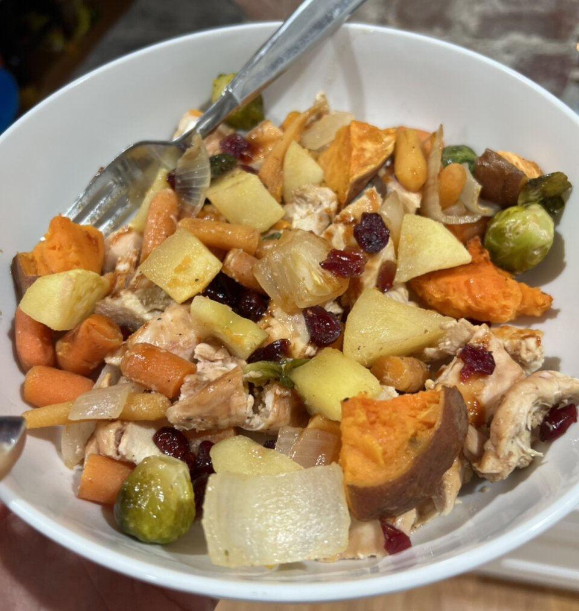

Winter Chicken Bake

Description
This is an easy recipe that is warm, hearty, healthy, and colorful. The tartness of the cranberries compliments the sweetness of the barbecue sauce and the mellow sweet potatoes.You can use homemade barbecue, or your favorite store bought brand will work perfectly well. Best enhjoyed hot on a cold day.
ingredients
- 1 Sweet Potato
- 1/2 medium sweet onion, chopped
- 1 medium apple- peeled, cored, and chopped
- 3 carrots, peeled and chopped
- 2 skinless, boneless chicken breast halves
- 2 tablespoons barbecue sauce
- 1 cup cranberries
steps
- Preheat oven to 375 degrees F (190 degrees C). Lightly grease a baking dish.
- Pierce the sweet potato several times with a fork and cut in half. Place in a microwave-safe dish; pour water to about 1/2-inch deep. Cook in microwave 10 minutes.
- Arrange the onion, apple, and carrots into the bottom of the prepared baking dish. Brush the barbecue sauce on both sides of the chicken breasts and lay atop the vegetables. Peel the sweet potato and cut into large chunks; scatter into the baking dish. Sprinkle the cranberries over the dish.
- Bake in the preheated oven until the chicken is tender and no longer pink in the center, 45 to 55 minutes. Allow to cool 5 minutes before serving.